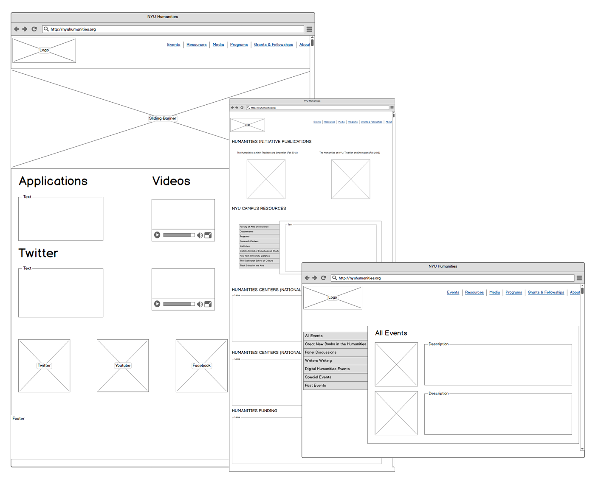
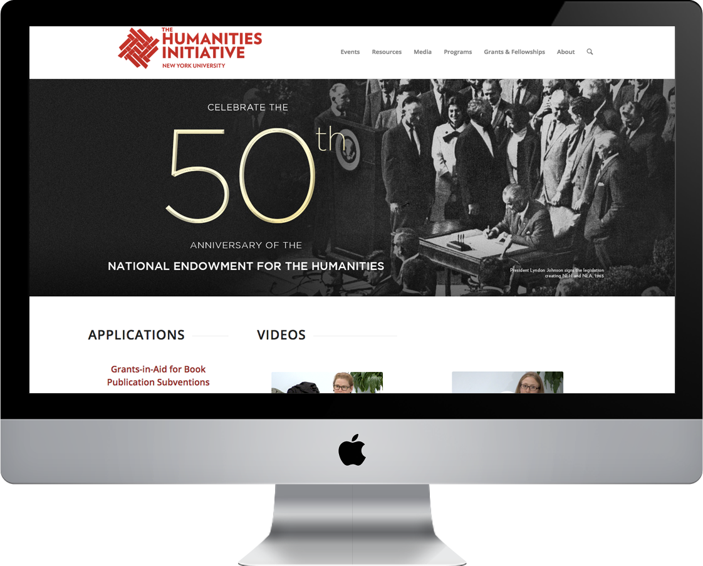

While at University of New York, I correlated with different people including students and professors. I worked as the Department of Humanities website developer and also with enlightening students and professors on website development and maintenance. This position sole responsibility was dealing with all the aspects of the NYU humanities website. My collaboration with the Department of Humanities at New York University sharpened my interpersonal skills as well as technical skills. My proficiency in web development increased to greater standards that can be absorbed into any Information Technology related firm.

